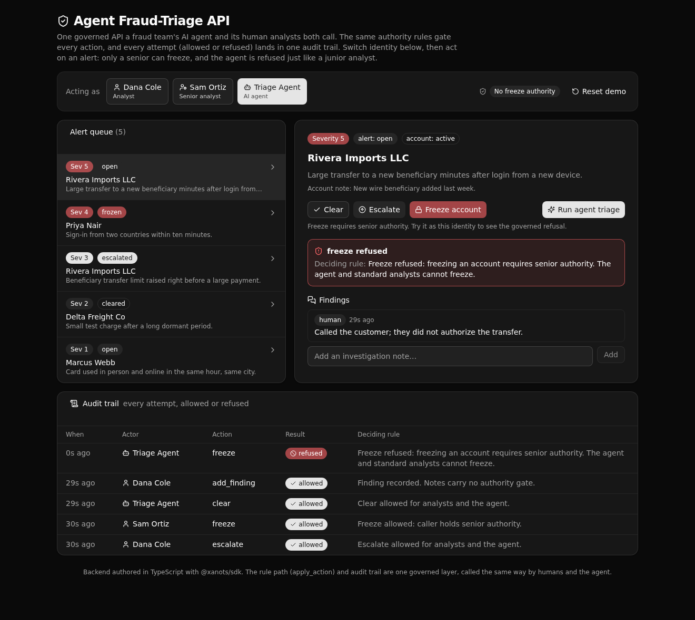

One governed Xano API a fraud team's AI agent and its human analysts both call, with the same authority rules on every action and one audit trail of every attempt.

An AI agent and human analysts hit the same permissioned, logged endpoints, so the business rules live in one place a technical evaluator can read and trust. The agent gets no privileged shortcut. When it asks to freeze an account, the API refuses it at the rule layer with the deciding rule, exactly as it refuses a standard analyst. A senior analyst is allowed. Every attempt, allowed or refused, is written to one audit trail.
alerts/act and triage/run call the same apply_action function, so a human and the agent cannot drift apart.| Verb | Path | What it enforces |
|---|---|---|
| POST | api:aftq-seed/reset | Public. Resets and seeds the demo. |
| POST | api:aftq-auth/token | Password check, then mints a token with the classified actor. |
| GET | api:aftq-alerts/queue | Auth. The alert queue joined with its account. |
| GET | api:aftq-alerts/get/{alert_id} | Auth. One alert with its account and findings. |
| POST | api:aftq-alerts/act | Auth. Clear, escalate, or freeze. Freeze needs senior authority. |
| POST | api:aftq-triage/run | Agent token only. Runs the agent, applies the result through the same rule path. |
| POST | api:aftq-findings/add | Auth. Appends a note, tagged human or agent, and logs it. |
| GET | api:aftq-actions/list | Auth. The audit trail, newest first, with an optional filter. |
Switch identity between a human analyst, a senior analyst, and the agent.
Open alerts with account, severity, and status.
Act on an alert and see the deciding rule that fired.
Every attempt, newest first, with actor and allowed or refused.
The frontend is React, Vite, Tailwind, and shadcn/ui. It derives its request paths and its types from the
query defs (the one contract in frontend/src/lib/api.ts), so a backend change surfaces as a type
error rather than a broken call.
Clone it and deploy it to your own Xano instance in a minute:
git clone https://github.com/xano-scratch/agent-fraud-triage-api.git
cd agent-fraud-triage-api
npm install
npx xanots login
npm run xano:deployOr hand this to your coding agent:
Clone https://github.com/xano-scratch/agent-fraud-triage-api, run
npm install and npx xanots login, then npm run xano:deploy to get it
live on my Xano instance. Then help me adapt the tables and the
apply_action rules to my own domain, keeping the shared rule path and
the audit trail.npm run xano:deploy for fresh links.